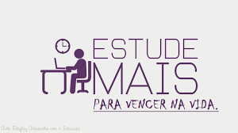

O atendimento especializado busca promover a suplementação curricular, incentivando a participação nas oficinas oferecidas (Linguagens, Arte, Humanidades, Iniciação Científica, Programação, Matemática Criativa e Atelie Literário), nas feiras cientificas, olimpiadas e auxiliar na elaboração de projetos de iniciação cientifica.
Assim, os alunos participam de oficinas e desenvolvem projetos de seu interesse e atrelado a esse contexto nos atendimentos exploramos o autoconhecimento, raciocínio lógico, percepção, atenção, concentreção, criatividade e ainda Atividade Tipo I - Exploratória que tem por objetivo promover o contato com temáticas variadas para estimular novos interesses e possibilidades de temas aserem investigados. Atividades Tipo II - Enriquecimento que procuram estimular o envolvimento com a pesquisa explorando sua área de interesse e Atividade Tipo III - Culminam no desenvolvimento de produtos criativos; originais e valorizados.
| CONTEÚDOS | OBJETIVO |
|---|---|
| Autoconhecimento | Investigar as áreas de interesses e habilidades do aluno, bem como as necessidades relacionadas questões individuais como a socialização, respeito, entre outras. |
| Raciocínio Lógico; Percepção; Atenção e Concentração | Estimular o desenvolvimento cognitivo. |
| Criatividade | Estimular o desenvolvimento de seu potencial criativo, articulando a imaginação, a expressão e a produção. |
| Atividade Tipo I Exploratória | Promover o contato com temáticas variadas para estimular novos interesses e possibilidades de temas a serem investigados. |
| Atividades Tipo II Enriquecimento | Estimular o envolvimento com a pesquisa explorando sua área de interesse. |
| Atividade tipo III | Desenvolver produtos criativos; originais e valorizados; |
| Arte, Linguagens, Humanidades, Iniciação Científica, Programação, Matemática Criativa, Ateliê Literário e outras oficinas. | enriquecimento curricular de acordo com a área de habilidade e interesses do aluno. |
Resgatando a História do CECM Prof. Francisco Villanueva – Livro de memórias: Realizar uma pesquisa histórica em documentos oficiais sobre o início das atividades escolares do atual CECM Prof. Francisco Villanueva. Realizar entrevistas com ex-alunos, funcionários aposentados procurando resgatar a história oral. Confeccionar um livro Scrapbook, com fotos e QRcode que direcione para maiores informações sobre a história do colégio.
Terrário Permanente: Realizar uma pesquisa bibliográfica sobre ecossistema bióticos e abióticos, conhecendo suas especificidades. Coletar / adquirir plantas, solo. Montar um terrário permanente. (Ideia inicial é montar vários, mostrando as etapas para se obter um terrário completo). Dissecação
Realizar uma pesquisa bibliográfica sobre o assunto - “dissecação”, com foco em plantas e frutas. Foco da leitura: etapas e materiais que utilizam. Escolher uma fruta para iniciar o processo de dissecação. Fotografas as etapas e elaborar desenhos com o passo a passo.
Jogo de Xadrez Medieval Escrita do jogo e das regras. Base para essa escrita (manual do jogo de xadrez tradicional). Confecção das peças e do tabuleiro.
Livro de memórias do Sala de Recursos de Altas Habilidades/Superdotação do CECM Prof. Francisco Villanueva Consulta em documentos escolares sobre a abertura da turma. Pesquisa de fotos e materiais que relatem a história da sala.
Maquete “Meu olhar sobre” Pesquisa sobre materiais que podemos utilizar na construção de maquetes realistas. Escolha de uma paisagem a ser representada.
Neurociência Estudo bibliográfico sobre o cérebro e suas conexões. Como as pessoas aprendem? Confecção de um mapa mental.
Desenhos de flores com grafite Escolher flores para desenhar; Analisar a imagem e as perspectivas que serão representadas.
Folder explicativo sobre os Programas de Acesso às Universidades Definir universidades a serem pesquisadas;Pesquisar sobre os programas existentes em âmbito federal, estadual, municipal e particular para acesso às universidades. Confeccionar folder explicativo para que os alunos do colégio tenham acesso.
Manual do Investidor da Bolsa de Valores: Pesquisa bibliográfica e vídeos sobre o mercado financeiro e suas especificidades no momento econômico atual. Simular um investimento e detalhar essa ação, desde o primeiro investimento até o possível retorno financeiro que se espera alcançar. Escrever o passo a passo dessa simulação, confeccionando assim o manual do investidor.
Maquete do Sistema Solar (Astronomia): Estudo de características dos planetas. Montar no Canva cartaz com curiosidades para ser fixado na maquete para acesso por QRcode. Confecção da maquete.